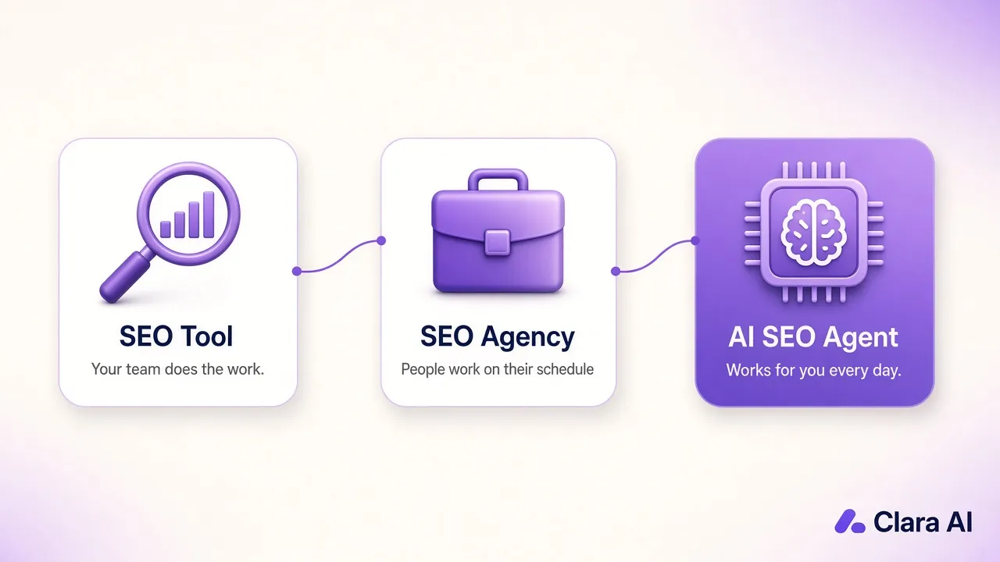

An SEO tool gives you data, but your team still does the work. An SEO agency does the work with people, on their schedule. An AI SEO agent does the daily work itself: it researches, writes, publishes, gets pages indexed and reports results. For B2B teams with no SEO or tech staff, the agent is usually the best fit.
We know because we run one on our own site. claraai.tech grew organic sessions by +28% from 10–25 Oct vs 24 Sep–9 Oct 2026 (our own Google Analytics), with the agent publishing a new post every day and no one on our team writing them.
All three promise more traffic from Google. The real difference is simple: who does the work every week.
If you are new to the idea, our guide What is an AI SEO agent? explains it step by step.

Here is an honest comparison for a B2B company that wants buyers from search but can't hire a tech or content team.
| SEO tool | SEO agency | AI SEO agent | |
|---|---|---|---|
| Who does the work | Your team | The agency's people | The agent, every day |
| Time you need each week | Several hours | Calls, reviews and approvals | A short weekly check |
| Publishing speed | As fast as your team writes | A few posts a month, by plan | One post a day, if you want |
| Indexing and internal links | Manual | Usually done, with delays | Built into each publish |
| AI search (GEO) | Depends on how you use it | Depends on the agency | Answer-first posts, FAQs and schema by default |
| Reporting | Dashboards you read yourself | Monthly report | Weekly numbers on clicks, rankings and leads |
| Strongest at | Data for an in-house SEO | Technical fixes, migrations, digital PR | Steady content on buyer topics |
| Weak spot | Nobody has time to use it | Slow, and depends on who is assigned | Needs your facts and examples to start |
None of these is magic. Google's own page Do you need an SEO? suggests asking any SEO provider what results to expect, in what timeframe, and how they measure success. Ask the same of a tool or an agent.
A tool is the right call when you already have a person who owns SEO and has hours every week to use it. A good marketer with a keyword tool and a rank tracker can do a lot.
The trouble is the usual B2B reality. The founder, the sales head and the marketing head are all busy selling. The login gets used for two weeks, then nobody opens it again. A tool does not write, publish or follow up on its own.
An agency makes sense when you need deep, one-off expert work: fixing a broken site structure, moving to a new website without losing rankings, or earning links from big publications through digital PR. Good agencies bring experienced people to those problems.
For day-to-day content, agencies are often slow. Work is planned monthly, posts go through rounds of review, and the person who knows your business can change. You also get a report once a month, which is a long wait if you want to see what is working.
An agent fits best when three things are true: you sell to other businesses, each customer is worth a lot, and your buyers search before they call. Manufacturers, distributors, software firms, consultancies and B2B service companies all fit this.
The agent works the way a good employee would. It opens your website in a browser, does the work and reports back to the manager on WhatsApp. That is why we believe that for non-physical office work like SEO, companies will come to AI agencies instead of hiring. You get the output of a full-time content person without the hiring, training and follow-up.
It also covers AI search. Buyers now ask ChatGPT, Gemini and Google AI Overviews to shortlist vendors, and those tools quote clear, well-structured pages. Our post on GEO (generative engine optimization) explains how that works.
Is AI-written content safe? Google's guidance on using generative AI content says what matters is whether content is helpful and original, not how it was made. That is why the agent writes from your approved facts and real examples, not filler.
Yes, and many teams should. A common setup:
The same idea works beyond SEO. Our AI LinkedIn Outreach Agent runs outreach in the browser and sends replies to you on WhatsApp. For one B2B client, Haique Surfaces, it reached 345 people with 107 accepting (31%) and 14 replies, as of 21 Oct 2026. Buyers who read your posts on Google then hear from you on LinkedIn.
Our AI SEO Agent starts with a short conversation about your business, your buyers and the pages that matter most. We agree the topics, facts and tone once. Then the agent publishes on schedule and sends you simple weekly numbers. You can read how it worked on our own site in the AI SEO agent case study, or see how it applies locally in SEO for B2B companies in India.
Clara AI is a team of 14 that builds AI agents for 19 businesses. Tell us what you sell and who you want to reach, and we aim to show you a first demo within 7 days.